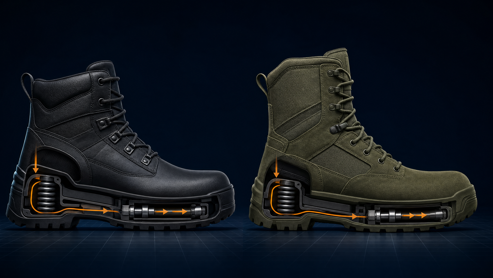
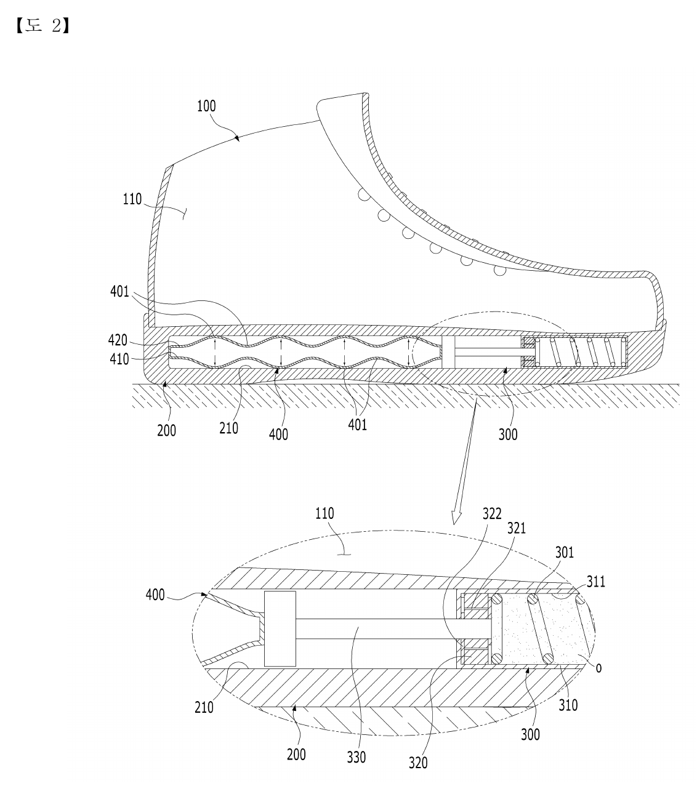
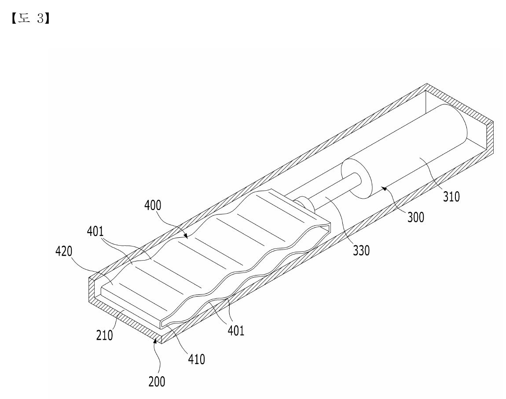
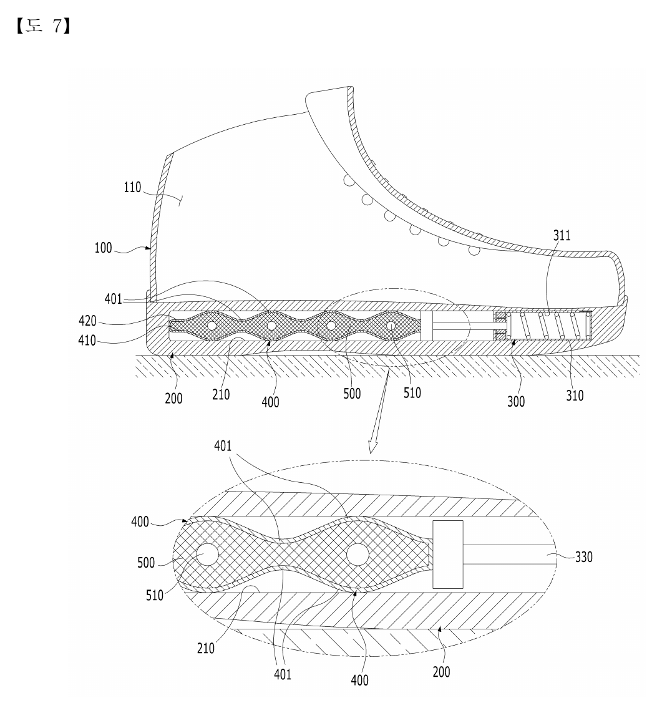
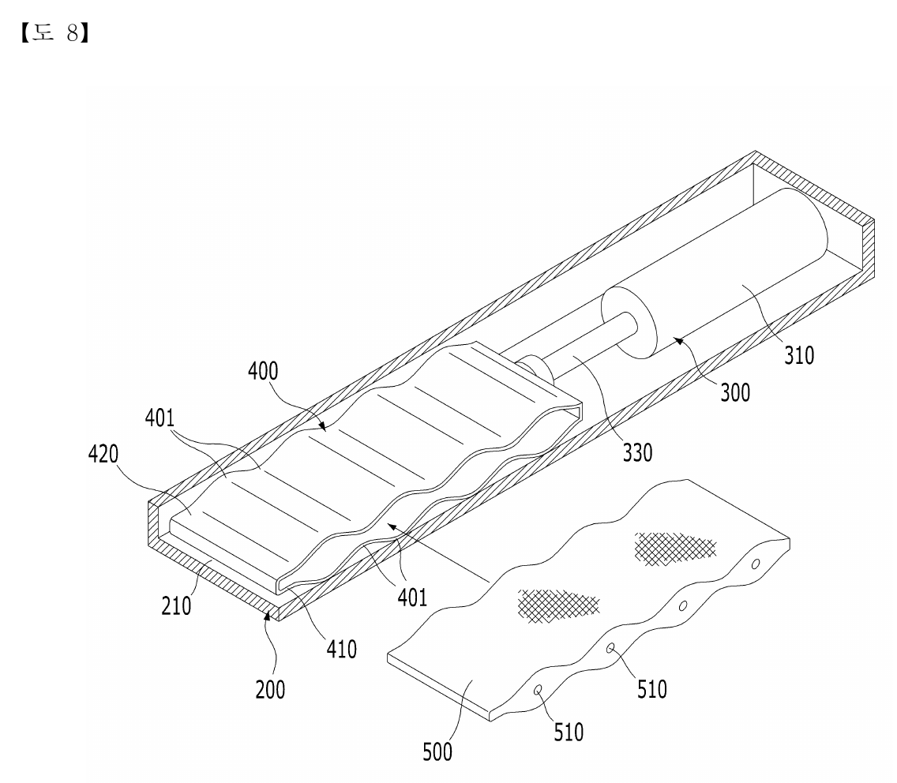

01
등록 지식재산
출원·등록번호와 권리자 정보가 확인된 국내 등록특허입니다.
평상시 착화 성능은 유지하고, 예기치 못한 고충격 순간에는 단계적 변형과 감쇠로 상향 전달 충격을 낮추는 것을 목표로 합니다.

AI 제품 콘셉트 시각화 · 최종 설계 및 특허 도면 아님본 보고서는 확인된 특허 사실과 제품화 구상, 향후 시험으로 입증해야 할 가설을 구분합니다. 핵심은 “항상 무른 신발”이 아니라, 일정 수준 이상의 충격에서 구조가 단계적으로 작동하는 밑창 시스템입니다.
출원·등록번호와 권리자 정보가 확인된 국내 등록특허입니다.
산업 안전화와 군용 전투화를 1차 제품화 트랙으로 설정합니다.
평상시 간섭 최소화, 고충격 순간의 단계적 흡수라는 이중 목표입니다.
등록특허 기반 개념 단계. 시제품·정량 시험·인증 검토가 필요합니다.
안전화와 전투화는 보호성·내구성을 위해 단단하고 무거워지기 쉽습니다. 반대로 상시 부드러운 쿠션은 안정성, 수명, 바닥 감각과 상충할 수 있습니다. 본 기술은 고충격 사건에서만 추가 스트로크와 감쇠를 확보하는 방향을 제안합니다.
낙하, 점프 착지, 단차·장애물, 중량물 작업 등 순간적으로 큰 하중이 발생하는 상황을 설계 시나리오로 정의합니다.
두께·무게·굴곡성·지면 감각을 해치지 않으면서 추가 완충 스트로크를 넣어야 합니다.
신발 제조 역량과 소형 쇼크업소버·스프링·절곡판 기술을 결합하면 독립적인 밑창 모듈로 개발할 수 있습니다.
아래 흐름은 청구항의 작동 관계를 이해하기 쉽게 시각화한 것입니다. 실제 에너지 저감 성능과 작동 임계값은 구조해석과 시험으로 결정해야 합니다.
밑창 상부에 설정 수준 이상의 순간 하중이 작용합니다.
물결형 절곡구간이 전후로 펼쳐지며 1차 변형 스트로크를 만듭니다.
전개된 절곡부가 앞쪽 탄성·감쇠 요소를 밀어 2차 에너지 흡수를 유도합니다.




| 설계 항목 | 평상시 착화 모드 | 비상·고충격 모드 |
|---|---|---|
| 작동 목표 | 완충 모듈의 개입과 저항을 최소화 | 임계 하중 이후 추가 스트로크·감쇠 활성화 |
| 사용자 경험 | 일반 보행의 굴곡성, 안정감, 지면 감각 유지 | 바닥 찍힘과 순간 최대 전달하중을 낮추는 방향 |
| 유압 적용 가설 | 저유량 저항 또는 바이패스 경로로 간섭 최소화 | 임계밸브·가변 유로로 높은 감쇠력 형성 가능성 검토 |
| 핵심 검증 | 무게, 밑창 굴곡, 발열, 소음, 장시간 피로도 | 피크 하중·가속도, 스트로크, 바닥침, 반발 안정성 |
반복 작업과 돌발 충격을 함께 고려한 내구형 모듈을 지향합니다.
험지 이동과 점프·착지, 다양한 온도에서의 신뢰성을 우선합니다.
특허권만으로 완제품은 만들어지지 않습니다. 신발 설계, 소형 감쇠기, 탄성체, 시험·인증이 동시에 연결되어야 사업화 리스크가 낮아집니다.
라스트·아웃솔 설계, 착화 시제품, 양산 공정, 원가 구조
초소형 실린더, 밸브·유로, 누유 방지, 감쇠곡선 튜닝
절곡 형상, 재료·열처리, 반복피로, 프레스·성형 공정
충격·피로·환경·미끄럼 시험 설계와 정량 비교
제품 요구사항, 수요처 인터뷰, 인증 경로, 조달·유통 전략
충격 시나리오 정의, 구조 패키징, CAE 및 작동 임계값 가설 수립.
절곡판형·유압보조형 2안 제작, 정적 작동과 누유·간섭 확인.
기준 밑창 대비 피크·에너지·반발·피로·환경 성능을 계측.
윤리·안전 절차 아래 보행성 평가 후 인증 준비와 파일럿 설계.
검증된 밑창 모듈 사양과 특허 실시권을 제조사에 제공. 초기 설비 부담을 분산하고 복수 제품군으로 확장하기 유리합니다.
신발 업체와 쇼바·판재 업체가 요구사항과 시험비를 분담하고, 개발 결과·개량 IP·공급권을 계약으로 정합니다.
특정 안전화·전투화 사양에 맞춘 일체형 제품을 개발하고, 생산은 인증·양산 역량을 가진 업체가 담당합니다.
산업·군용·레저 등 적용 분야를 구분해 제한적 독점권을 부여하되, 최소실적·기간·지역·개량기술 조항으로 권리를 보호합니다.
| 리스크 | 영향 | 선제 대응 |
|---|---|---|
| 부피·중량 증가 | 착화 피로, 상품성 저하 | 모듈 길이·직경 최적화, 경량재, 2개 구조안 동시 비교 |
| 내구·밀봉 | 누유·부식·기능 상실 | 건식 절곡판형 기준안 확보, 씰·부츠·배수 구조 및 환경시험 |
| 의도치 않은 작동 | 보행 불안정, 에너지 손실 | 임계값 분포와 사용자 중량 범위 정의, 바이패스·프리로드 검토 |
| 과도한 반발 | 발목 안정성 저하 | 압축·복원 감쇠 분리, 리바운드 속도 측정, 바닥침 제한 |
| 권리범위 회피 | 유사제품 차별화 약화 | 청구항 요소별 설계지도, 개량특허, 계약상 개량기술 귀속 |
| 인증·표시 | 출시 지연, 표현 리스크 | 초기부터 시험기관 협의, 검증 전 인체보호·부상예방 단정 금지 |
| 단가 | 양산 채택 저하 | 부품 수·조립공수·검사공정 기준의 목표원가 설계 |
현재 특허는 개인 명의입니다. 회사가 개발비를 집행하고 제품을 판매하거나 외부 자금을 활용하려면, 회사가 해당 권리를 안정적으로 사용할 수 있다는 문서가 필요합니다.
신발 설계·제조, 초소형 쇼크업소버, 스프링·판재 성형, 충격시험 역량을 결합해 안전화·전투화용 시제품을 함께 검증하고자 합니다.